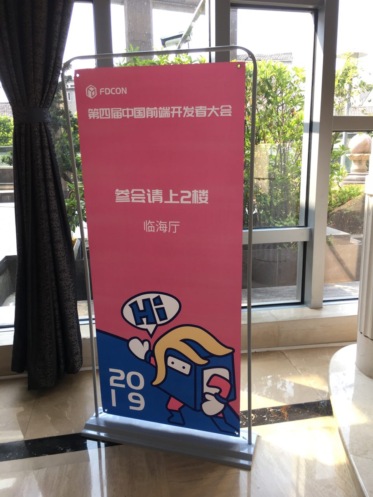
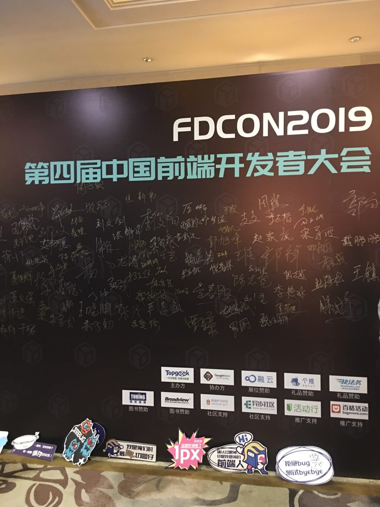
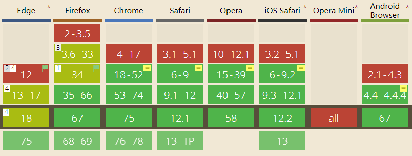
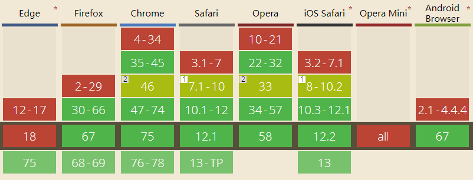
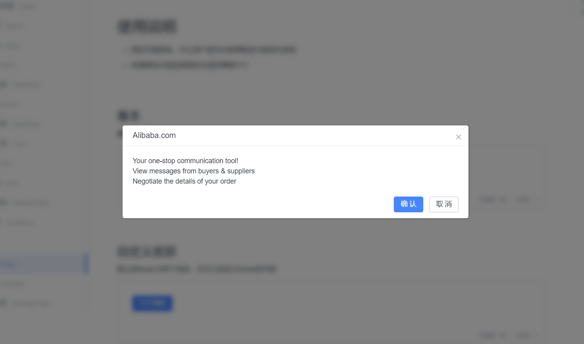
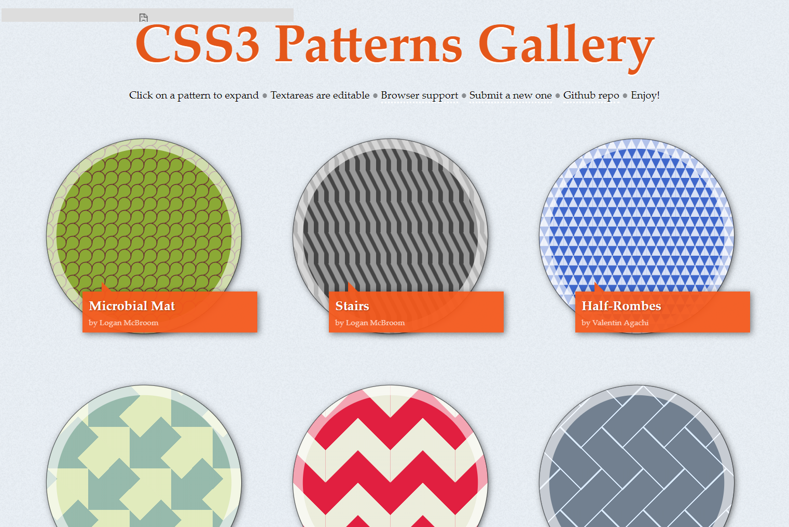
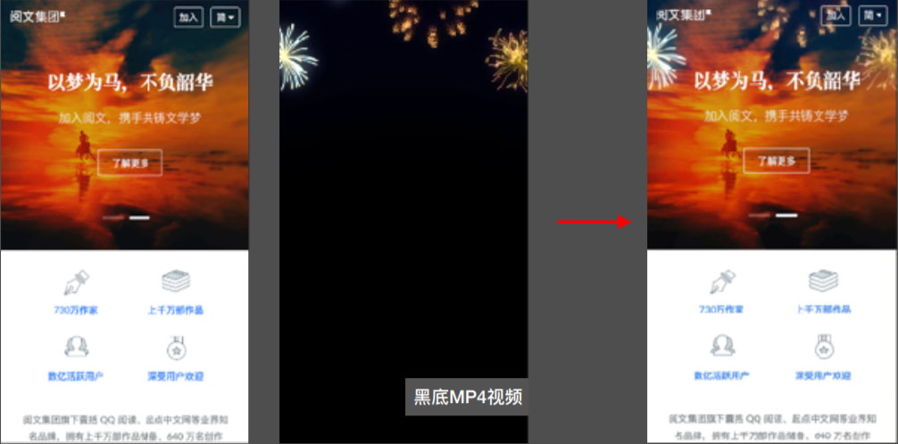
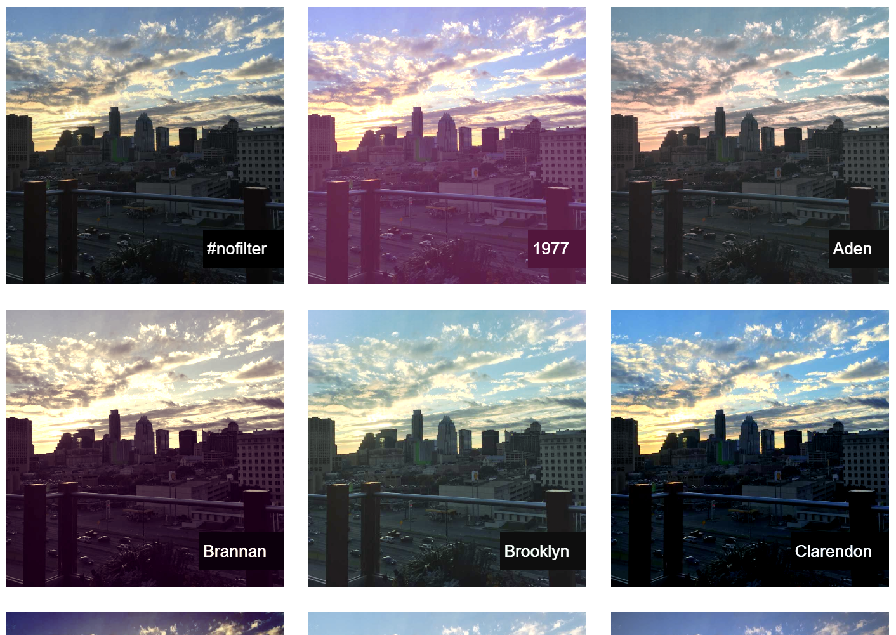

CSS 滤镜与混合模式
FDCon 2019 见闻 By 业枫
2019-06
前言
 5月份参加了FDCon 2019，在此挑一个印象比较深刻的演讲做分享。
张鑫旭的《滤镜与混合模式》算是本次大会演讲的一股泥石流，只有这一个关于CSS的主题，因此和大家分享一下见闻和想法。
讲了什么？
- 00后都快20岁了 👈 标题党
- 滤镜
- 混合模式
- 滤镜与混合模式
让我们开始吧~
1、兼容性问题？
现在都9102年，00后都快20岁了
还在纠结兼容性问题？😓
来看看浏览器的支持情况
CSS 滤镜
CSS 混合模式
总结一下
- IE/Edge 告辞😭
- 中后台/内部系统 赞爆😍
-
移动端
- 运营活动 没有问题😘
- 国民级产品 渐进增强😜
- 非国民级产品 没有问题😘
（个人认为取决于目标用户群体，用渐进增强会更优）
2、CSS 滤镜
先来简单了解一下👀
| 属性 | 说明 |
|---|---|
| filter: blur(5px) | 模糊 |
| filter: brightness(1.4) | 亮度 |
| filter: contrast(200%) | 对⽐度 |
| filter: drop-shadow(5px 5px 12px white) | 投影 |
| filter: grayscale(50%) | 灰度 |
| filter: hue-rotate(90deg) | ⾊调变化 |
| filter: invert(75%) | 反相 |
| filter: opacity(25%) | 透明度 |
| filter: saturate(230%) | 饱和度 |
| filter: sepia(60%) | 褐⾊ |
模糊
filter: blur(5px)

亮度
filter: brightness(1.4)
对⽐度
filter: contrast(200%)
投影
filter: drop-shadow(5px 5px 12px white)
灰度
filter: grayscale(50%)
⾊调变化
filter: hue-rotate(90deg)
反相
filter: invert(75%)
透明度
filter: opacity(25%)
和opacity区别：部分浏览器启⽤硬件加速，更加耗电
饱和度
filter: saturate(230%)
褐⾊
filter: sepia(60%)
3、你可能用过的 CSS 滤镜
模糊、投影、灰度滤镜应⽤举例
弹窗背景模糊
不规则投影
box-shadow

filter: drop-shadow
图片变灰
filter: grayscale(100%)
4、你应该没用过的 CSS 滤镜
更高一级的应⽤举例📷
局部模糊，径向模糊⽐度
.filter-blur {
position: absolute;
filter: blur(20px);
mask-image: radial-gradient(transparent, transparent 10%, black 60%);
}
颜色转换
CSS filter滤镜理论上可以实现任意⾊值转换😎 👉 工具
色彩动画
.flow-colorful {
height: 200px;
background: linear-gradient(to right, red, orange, yellow, green, cyan, blue, purple);
animation: hue 6s linear infinite;
}
@keyframes hue {
from {
filter: hue-rotate(0deg);
}
to {
filter: hue-rotate(360deg);
}
}
文字色彩动画
.flow-colorful-text {
font-size: 100px;
-webkit-background-clip: text;
-webkit-text-fill-color: transparent;
background-image: linear-gradient(to right, red, orange, yellow, green, cyan, blue, purple);
animation: hue 6s linear infinite;
}
大白分享会(●—●)
5、更进一步的滤镜技术
滤镜特效🌈
融合粘滞效果
// DOM
<div class="parent">
<div class="children"></div>
<div class="children"></div>
</div>
// CSS
.parent {
filter: blur(10px) contrast(5);
}
.children {
background: magenta;
}
更多示例，作者：Chokcoco
6、引入SVG滤镜
CSS filter动效的潜⼒⽆限，详情请见：这里
/* 外链 */
.filter {
filter: url("filter.svg#filter-id");
}
/* 内联 */
.filter {
filter: url("#filter-id");
}
7、混合模式
简单了解CSS混合模式
相关属性
background-blend-mode
⽤于混合元素背景图案、渐变和颜⾊
mix-blend-mode
⽤于元素与元素之间的混合
isolation：isolate
⽤在祖先元素上，限制mix-blend-mode混合模式应⽤范围
| 属性 | 说明 |
|---|---|
| mix-blend-mode: normal | 正常 |
| mix-blend-mode: multiply | 正⽚叠底 |
| mix-blend-mode: screen | 滤⾊ |
| mix-blend-mode: overlay | 叠加 |
| mix-blend-mode: darken | 变暗 |
| mix-blend-mode: lighten | 变亮 |
| mix-blend-mode: color-dodge | 颜⾊减淡 |
| mix-blend-mode: color-burn | 颜⾊加深 |
| mix-blend-mode: hard-light | 强光 |
| mix-blend-mode: soft-light | 柔光 |
| mix-blend-mode: difference | 差值 |
| mix-blend-mode: exclusion | 排除 |
| mix-blend-mode: hue | ⾊相 |
| mix-blend-mode: saturation | 饱和度 |
| mix-blend-mode: color | 颜⾊ |
| mix-blend-mode: luminosity | 亮度 |
background-blend-mode: multiply
8、混合模式与Web开发
mix-blend-mode:difference
.blend-difference-text {
color: #fff;
mix-blend-mode: difference;
}
.blend-difference-bg {
background: linear-gradient(#fff 50%, #191919 50%);
animation: spin 5s linear infinite;
}
mix-blend-mode:darken/lighten
darken：哪个颜⾊深使⽤哪个颜⾊
lighten：哪个颜⾊浅使⽤哪个颜⾊
.icon-color {
background: #cd5c5c url("//gw.alipayobjects.com/zos/rmsportal/fVyyVdYqEXyjmxlWLtVw.png");
background-blend-mode: lighten;
}

mix-blend-mode:screen
很适⽤霓虹辉光效果


可以用在视频上！
9、滤镜与混合模式
CSS滤镜和混合模式同时应⽤案例
静态图片处理
.img-blend-filter {
background: rgba(238,179,163,.8) url("images/people.jpg");
background-blend-mode: soft-light;
}
静态图像处理-CSSgram项⽬
如何上传到服务器或者下载到本地呢？🤔
SVG foreignObject 💡
<svg>
<foreignObject>
<img src="..." alt="...">
</foreignObject>
</svg>
1. SVG <foreignObject>字符串（图像转为base64嵌⼊）；
2. 创建⼀个Image对象，src为data:image/svg+xml;charset=utf8,<svg…（上⾯的SVG字符串）；
3. 创建⼀个Canvas画布，把上⾯的Image对象绘制在画布上；
4. canvas.toDateURL()或者canvas.toBlob()得到合成后的图像数据。
👉 详解感谢观看
想要了解更多，可以参看张鑫旭博客中的相关资料：这里
以及大会资料：点这里👏